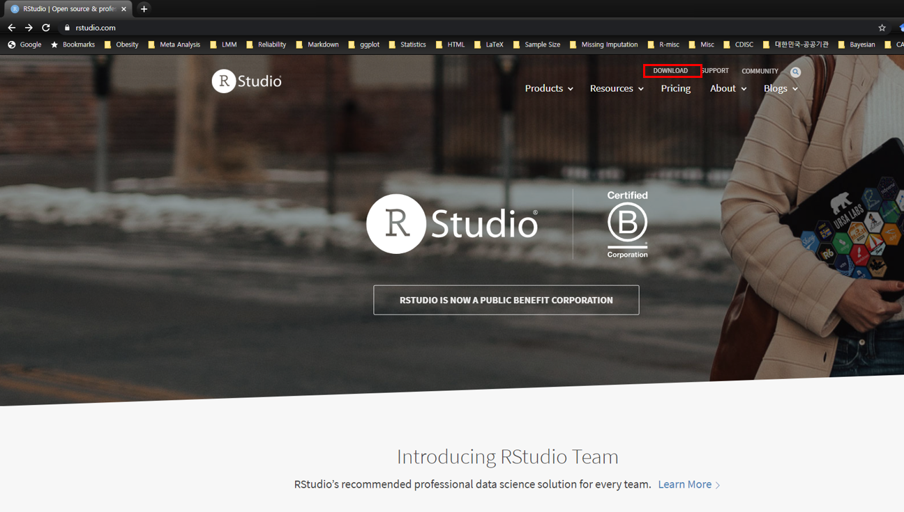
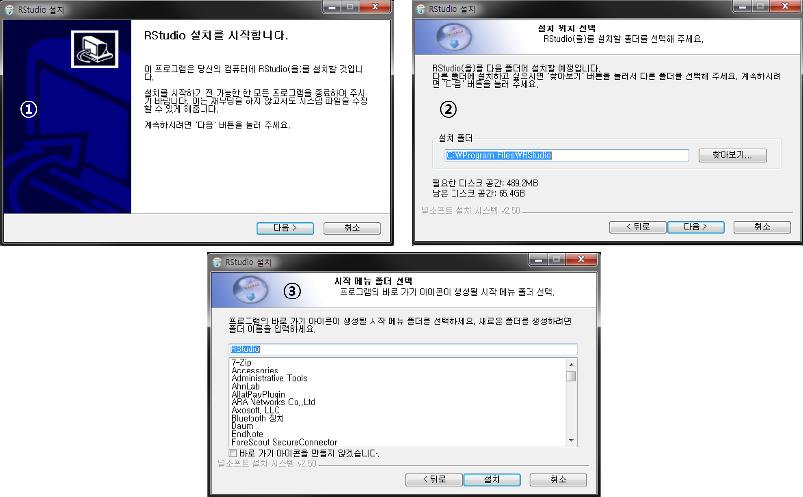

1.4 RStudio
- RStudio: R 통합 분석/개발 환경(integrated development environment, IDE)으로 현재 가장 대중적으로 사용되고 있는 R 사용 환경
- 명령 곤솔 외 파일 편집, 데이터 객체, 명령 기록(.history), 그래프 등에 쉽게 접근 가능
- RStudio 독자적인 개발 환경 제공: Rmarkdown, Rnotebook, Shiny Web Application 등 다양한 R 환경을 제공
- 버전관리(git, subversion)를 통해 project 관리 가능
- 무료 및 유료 소프트웨어 제공
1.4.1 RStudio 설치하기
- 웹 브라우저를 통해 https://rstudio.com 접속 후 상단 DOWNLOAD 링크 클릭

Desktop 또는 Server 버전 중 택일
- 서버용 설치를 위해서는 Server 클릭 \(\rightarrow\) 소규모 자료 분석용으로는 불필요
- 여기서는 Desktop 버전 선택 후 다음 링크로 이동

- 운영체제에 맞는 Rstudio installer 다운로드(여기서는 Windows 버전 다운로드)

- RStudio installer 다운로드 시 파일이 저장된 폴더에서 보통
RStudio-xx.xx.xxx.exe형식의 파일명 확인- 더블 클릭 후 실행
- [다음>] 몇 번 클릭 후 설치 종료
